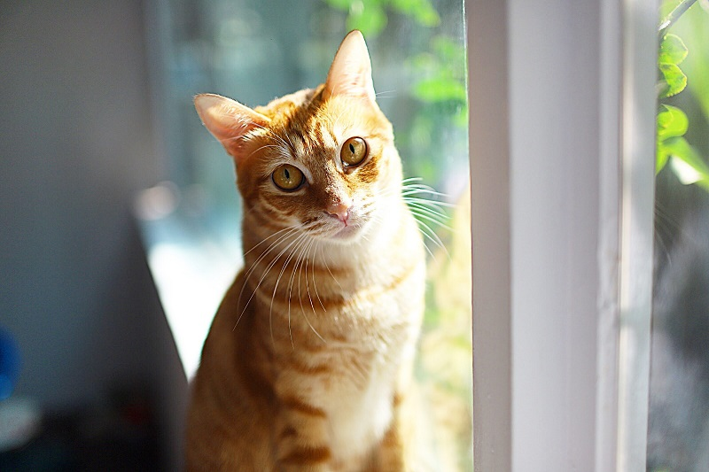

雖然故事中小南的好朋友因病痛而去世令人鼻酸，但是棒球隊員們的努力與改變才是讓筆者流淚的地方。 憑自己的力量改變，才是人類強大之處。 "管理"一詞，感覺離自己遙遠，因為它就像是為了讓企業更有效率的運作而特別出產的，也許是這樣吧？雖然故事中小南的好朋友因病痛而去世令人鼻酸，但是棒球隊員們的努力與改變才是讓筆者流淚的地方。 憑自己的力量改變，才是人類強大之處。
但是我覺得它卻可以運用在不同的地方，只要是組織，就可以運用在上面，不管組織的大小，小至班長、家長會長、主任；大致主管、部長、總統，甚至是離生活中最貼近的關係，友情、親情、婚姻 就拿情侶來說好了，男女朋友就像是一個組織，你們組織的定義是甚麼？換句話說，為甚麼要交往？因為喜歡、因為想一起畢業一起結婚生子、因為想一起創業、因為想一起喝辛巴克、因為想一起吃哈根達斯等等。